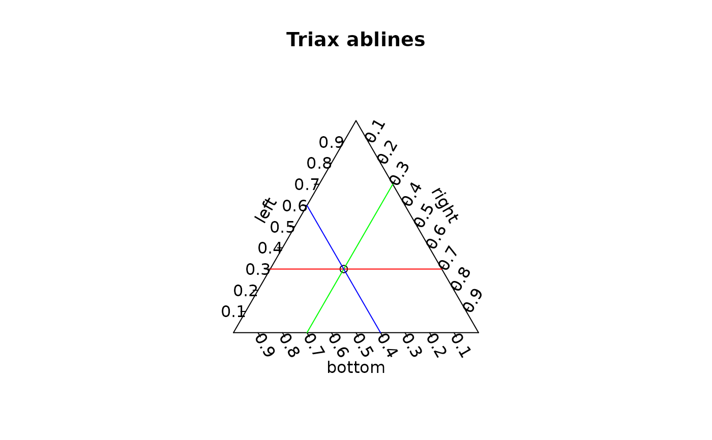

Lines for triangle plot
triax.abline.RdDisplay lines on a triangle plot.
Details
triax.abline displays one or more lines on a triangle plot. Lines are oriented in the conventional way, horizontal for the left axis, slanting up to the right for the right axis and up to the left for the bottom axis. If cc.axes is TRUE, the orientation is up-left for the left axis, horizontal for the right axis and up-right for the bottom axis.
Remember to call triax.plot with no.add=FALSE and restore the graphics parameters as in the example or the lines will not be placed properly.
Examples
triax.return<-triax.plot(data.frame(bottom=0.4,right=0.3,left=0.3),
main="Triax ablines",no.add=FALSE)
triax.abline(l=0.3,col="red")
triax.abline(r=0.3,col="green")
triax.abline(b=0.4,col="blue")

par(triax.return$oldpar)